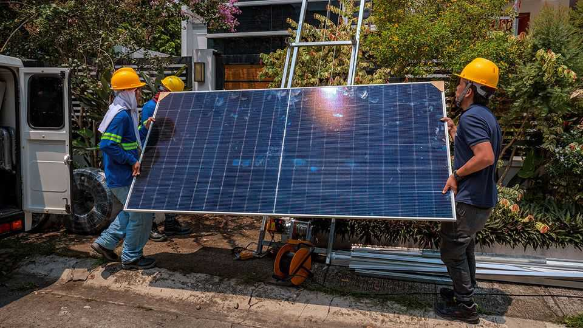
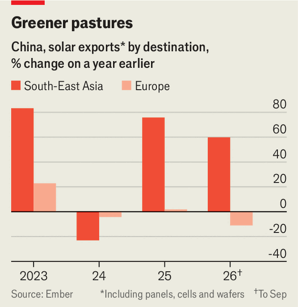

China’s exports of clean tech to South-East Asia are soaring
Unlike in the European Union, governments don’t fret about the influx

Nov 12th 2026
In recent years, China’s green-tech manufacturers have salivated over the market for their stuff in Europe. Demand there has surged as countries and consumers try to reduce their reliance on fossil fuels. European governments are becoming fretful about the impact on their industries and are trying to curb the influx, such as by imposing quotas on electric vehicles. But Chinese firms have options closer to home. Their exports to South-East Asia are soaring. Few in the region whinge.
The Iran war has supercharged South-East Asian demand. Many countries there depend on supplies of oil and gas from the Gulf. Fighting over the Strait of Hormuz has choked the flow, pushing up electricity prices and prompting a scramble for cheaper sources of power. In May the Philippines became the world’s second-biggest buyer of Chinese solar panels, overtaking Pakistan, according to Ember, a think-tank in London.
In recent months shops in the Philippines have barely coped with demand, says Ping Mendoza of the Philippine Solar and Storage Energy Alliance, a trade group. Waiting times for installing panels are now two or three months, instead of just a week. Unlike Pakistan’s relations with China, which are friendly, ties between the Philippines and China are bedevilled by territorial disputes in the South China Sea. But few in Manila worry about the tide of Chinese green tech. The Philippines does not have much industry that feels threatened. Westerners wonder whether some Chinese kit might pose security risks. There is little such angst in the Philippines.

Much of South-East Asia’s demand for clean gear from China does not relate to home markets. Countries in the region have been repackaging it for sale in the West, helping China evade American and European tariffs on Chinese goods. But the region is also rapidly emerging as an important end-market. In the first nine months of this year China’s exports of solar technology to South-East Asia leapt almost 60% by output capacity. To Europe, they fell by 11% (see chart).
Most governments in South-East Asia, eager for energy security, are pleased. In June Laos suspended the import of fossil-fuelled vehicles until the end of 2026. Malaysia is boosting tax incentives for firms to buy and use clean energy. Indonesia still subsidises coal, but its president, Prabowo Subianto, has vowed to increase the country’s solar-energy capacity from about 1.5 gigawatts (GW) to 100GW by 2029.
The prevailing desire in the Philippines is to “get as much [renewable capacity] built as possible”, says Colin Steley, an Australian who sells clean-energy kit there. Chinese firms are happy to help. ■
Subscribers can sign up to Drum Tower, our new weekly newsletter, to understand what the world makes of China—and what China makes of the world.